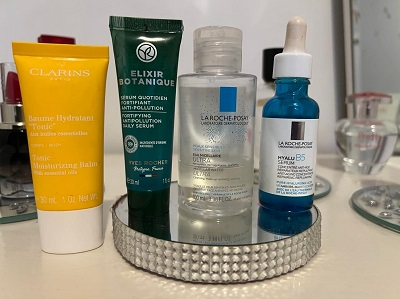

Prendre soin de son corps est indissociable du bien-être. l'hygiène corporelle quotidienne, les soins du corps sont une façon de se sentir bien dans sa peau.
Selon vos besoins, vos moyens et vos attentes, vous avez le choix entre de nombreux soins et produits. Découvrez les solutions qui s’offrent à vous.
Le nettoyage de la peau permet d'enlever :
L'excès de sébum et de sueur ;
Les traces de pollution et les salissures ;
Une partie des peaux mortes, que l'on doit toutefois éliminer régulièrement avec un gommage.
Il faut bien choisir le meilleur produit nettoyant pour la peau comme: les gels douches, l'huiles essentiels, Savon, gommage,
Il est recommandé de se nettoyer la peau une fois par jour, pour éliminer l'excès de sébum, la sueur et les salissures :
Le nettoyage de la peau doit être doux, il ne doit pas agresser la peau par un frottement trop vigoureux.
Il faut nettoyer tout le corps et prendre soin de ne pas oublier le nombril, derrière les oreilles et entre les orteils.
Pour l'hygiène intime et le visage, il est recommandé d'utiliser des produits spécifiques dont le pH est plus adapté à ces zones.
Il faut rincer soigneusement, afin d'éliminer un maximum de produit.
Terminer le nettoyage par un séchage à la serviette.
Soins de visage
Pour préserverer la santé et la beauté de votre teint, il faut s'adapté à une routine de soin de visage, surtout il faut bien choisir les produits utiliser, et puis, dans quel ordre et comment devrait-on les appliquer.
Étape 1 : Nettoyer Utilisez un nettoyant adapté à votre âge et à votre type de peau. Évaluez les besoins de votre peau pour choisir le nettoyant approprié.
Un nettoyant purifiant est bénéfique pour la plupart des types de peau, au moins quelques fois par semaine, peut-être même chaque jour. Il fait disparaître les impuretés incrustées dans la peau pour la rendre propre et affinée.
Étape 2 : Tonifier la peau lotion tonique a un rôle important,il fait disparaître toute trace de nettoyant et d’impureté tout en rééquilibrant le PH de la peau, qui est de 5,5. Le pH de l’eau peut atteindre 9,5 selon l’endroit où vous habitez et la dureté de l’eau. Après le nettoyage, le pH de la peau n’est donc plus équilibré; votre peau doit travailler fort pour le corriger. Mais la lotion tonique rétablit le pH dès que vous l’appliquez, ce qui apaise la peau.
Voici les produits que je l'ai utise aprés la tonique de la peau:
.
.
Étape 3 : Hydrater Matin et soir, vous devez restaurer l’hydratation de votre peau pour qu’elle reste fraîche, douce et confortable. On trouve toutes sortes d’hydratants, des lotions légères aux baumes riches. Toutefois, la plupart des peaux réagissent bien à une formule qui retient l’hydratation.
Quelques produits a vous conseillez, tester par moi même: